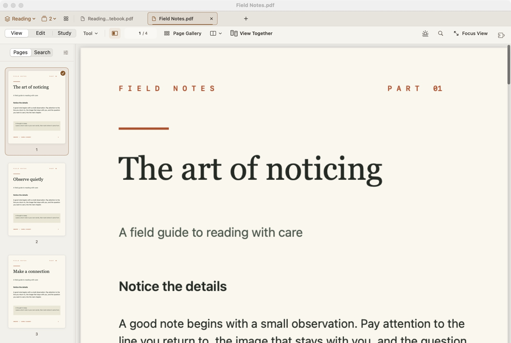
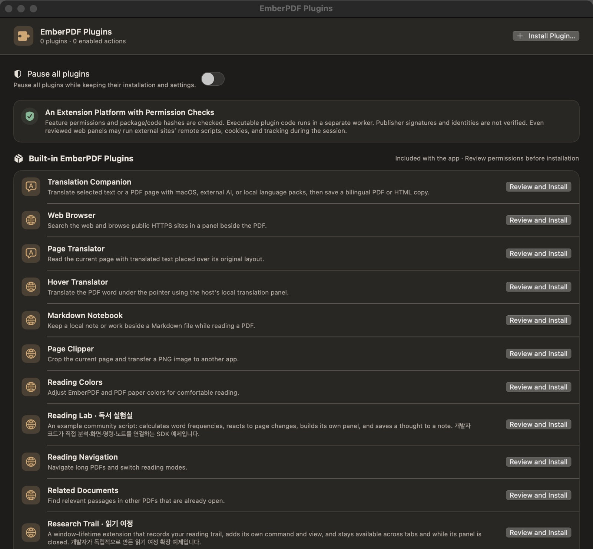

여러 PDF를 한눈에
여러 PDF를 탭으로 열고 문서를 나란히 비교합니다. 자료를 주제별 워크스페이스에 모아 작업을 이어갑니다.
Mac용 PDF 작업 공간
논문을 나란히 읽고, 마음에 남는 문장에 표시하고, 필요한 페이지를 한 파일로 모으세요. EmberPDF는 이 작업을 같은 Mac 창 안에서 이어가도록 만들었습니다.

개발 철학
유료로 구매한 PDF 앱이 구독제로 바뀌면서 쓰던 기능을 계속 쓰기 어려웠습니다. 화딱지가 나서 직접 만들기 시작한 앱이 HwattakPDF입니다.
Ember는 오랫동안 은은하게 타는 잉걸불이라는 뜻입니다. 오래 곁에 두고 쓸 수 있는 PDF 도구를 만들고 싶어 이 이름을 골랐습니다. 읽기, 검색, 주석, 기본 OCR은 계정이나 업로드 없이 Mac에서 처리하고, 작업한 파일은 PDF로 저장합니다.
주요 기능
여러 PDF를 탭으로 열고 문서를 나란히 비교합니다. 자료를 주제별 워크스페이스에 모아 작업을 이어갑니다.
하이라이트, 밑줄, 펜, 메모로 생각을 기록합니다. 공부하던 문서에서 표시한 문장으로 돌아갈 수 있습니다.
페이지를 재정렬·회전·추출·병합하고, 지원되는 PDF의 기존 본문 텍스트를 수정합니다.
Apple Vision으로 선택한 페이지의 글자를 인식해 검색 가능한 PDF를 만들 수 있습니다. 인식 품질은 원본에 따라 달라집니다.
선택한 문장이나 현재 페이지를 바탕으로 질문합니다. 외부 AI를 연결해 요청하면 해당 내용이 설정한 서비스에 전송될 수 있습니다.
페이지 번역과 Markdown 노트 같은 기본 플러그인을 골라 설치하거나, 커뮤니티 플러그인을 추가할 수 있습니다.
앱 화면
Obsidian의 확장 방식에서 영감을 받아, PDF를 다루는 도구도 작업에 맞게 고를 수 있게 했습니다. 페이지 번역, Markdown Notebook, Page Clipper를 1.0.0에서 직접 설치해 볼 수 있습니다.
PDF에서 선택한 문장으로 질문·답 카드를 만들고 Mac에 저장합니다. 복습할 때는 답을 가리고 문제를 풀 수 있습니다.
1.0.0 소스 ZIP을 풀고, 앱의 플러그인 관리 → 플러그인 설치에서 Examples/Plugins/EmberRecall.hwattakplugin 폴더를 선택하세요.

설치
Apple Silicon Mac과 macOS 14 이상에서 사용합니다. 이 빌드는 Apple 공증을 받지 않아 첫 실행 때 macOS 보안 경고가 표시될 수 있습니다. 설치 안내는 DMG에 들어 있습니다.